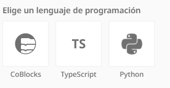

Para dar vida a tu entorno virtual y lograr que los personajes se muevan, hablen o reaccionen, debes pulsar el botón Programar de la barra superior. CoSpaces te ofrecerá tres modalidades de programación distintas adaptadas a diferentes niveles de aprendizaje:

- CoBlocks: Es un entorno de programación visual por bloques basado en arrastrar y soltar piezas (muy similar a Scratch). No necesitas escribir código de texto; simplemente encajas las piezas lógicas para definir las acciones de tus elementos de forma sencilla e intuitiva.
- ⌨️ TypeScript: Una opción avanzada que permite programar el entorno utilizando código de texto real basado en JavaScript, ideal para proyectos más complejos o niveles superiores.
- 🐍 Python: Otra alternativa de programación basada en texto que utiliza uno de los lenguajes de programación más populares y potentes del mundo.